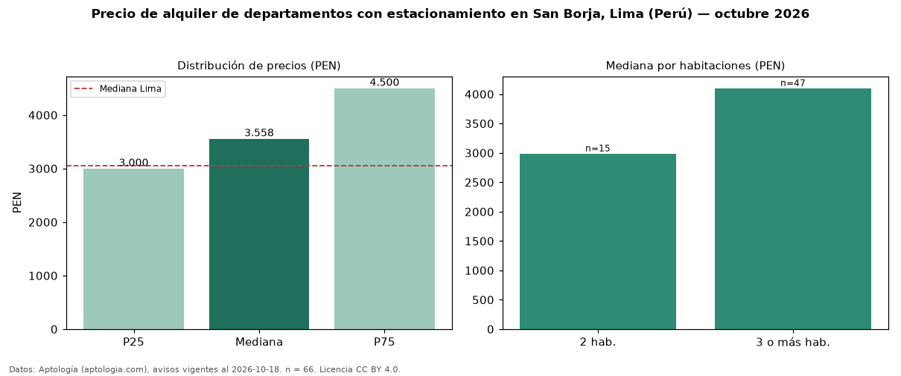

Precio de alquiler de departamentos con estacionamiento en San Borja, Lima (Perú) — octubre 2026
En San Borja, Lima (Perú), la mediana de canon mensual de departamentos con estacionamiento es PEN 3.558, según 66 avisos vigentes. Eso es 13 % más que la mediana de todos los departamentos en alquiler de San Borja (PEN 3.145, n = 95); este segmento reúne el 69 % de esos avisos. Por metro cuadrado, la mediana es PEN 29,08/m² al mes (n = 66), 0 % por encima del conjunto de referencia (PEN 29,08/m²). El área mediana anunciada es 120 m². El segmento con más oferta es el de 3 o más habitaciones (47 avisos, mediana PEN 4.100); pasar de 2 habitaciones a 3 o más habitaciones cambia la mediana +37 %. La mediana de todos los departamentos en alquiler de Lima es PEN 3.050 (+17 % de diferencia). La mitad central de los avisos va de PEN 3.000 a PEN 4.500 (razón 1,5), una dispersión moderada. Datos: Aptología (aptologia.com), CC BY 4.0 — https://www.aptologia.com/pe/alquiler/lima/san-borja. Archivos: PDF, CSV con las cifras y gráfica PNG.

| Avisos únicos | 66 |
|---|---|
| Percentil 25 | COP 3.000 |
| Mediana | COP 3.557 |
| Percentil 75 | COP 4.500 |
| Mediana por m² | COP 29 |
Fuente: avisos vigentes de portales inmobiliarios recopilados por Aptología, deduplicados (mínimo 30 avisos únicos por celda). Precios pedidos, no cerrados. Fecha: 2026-10-18.